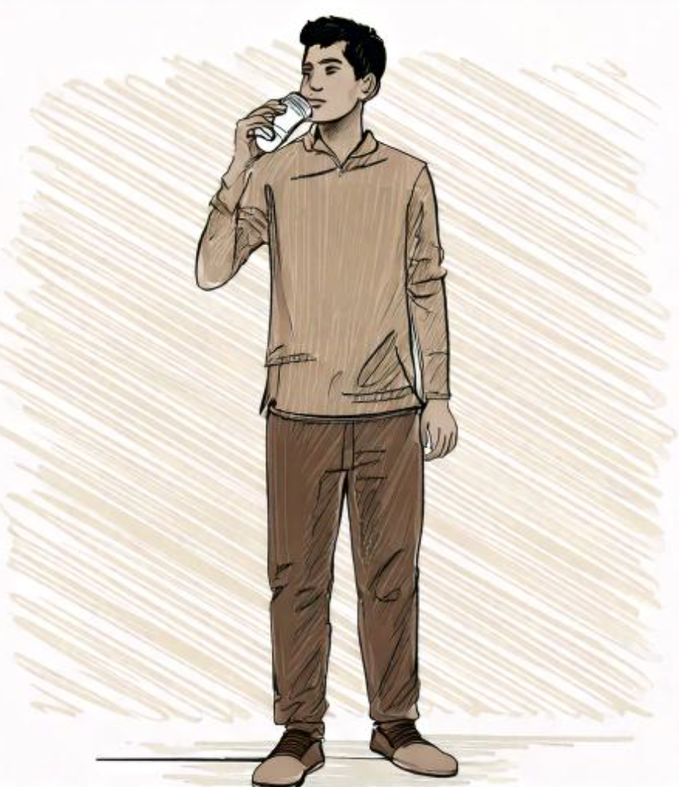
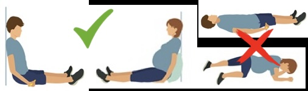

RISOBIS 35
Each tablet contains: Risedronate Sodium 35 mg
How to Take RISOBIS 35
- Pick a convenient day of the week that best fits your schedule to take your RISOBIS 35 tablet.
- Take Risobis 35 tablet on the same day of each week.
- RISOBIS 35 Tablets should be taken at least 30 minutes before the first food or drink of the day other than water and before taking any oral medication or supplementation, including calcium, antacids, or vitamins to maximize absorption and clinical benefit. The use of water with supplements, including mineral water, should be avoided because they may have a higher concentration of calcium.
- To facilitate delivery to the stomach, RISOBIS 35 Tablets should be swallowed in an upright position, with a full glass of plain water (approx. 200 ml).

- Patients should not lie down for 30 minutes after taking the medication.

- Patients should not eat or drink anything except plain water or take other medications for at least 30 minutes after taking RISOBIS 35 Tablets.
- The tablet should not be chewed or sucked because of a potential for oropharyngeal ulceration.
- Patients should receive supplemental calcium and vitamin D if dietary intake is inadequate.
Calcium supplements and calcium-, aluminium-, iron-, and magnesium-containing medications may interfere with the absorption of RISOBIS 35 Tablets and should be taken at a different time of the day.
If you develop symptoms of oesophageal disease (such as difficulty or pain upon swallowing, retrosternal pain, or severe persistent or worsening heartburn), you should consult your physician before continuing RISOBIS 35 Tablets.
Always give an accurate medication history to all of your healthcare providers and tell them that you are taking RISOBIS 35 Tablets.
Missed Dose
If a dose of RISOBIS 35 35 once-a-week is missed:
- Take one tablet on the morning after you remember and return to taking one tablet once-a-week, as originally scheduled on your chosen day.
- Do not take two tablets on the same day.
RISOBIS 35
દરેક ટેબ્લેટ રિસેડ્રોનેટ સોડિયમ 35 મિલિગ્રામ ધરાવે છે
રિસોબીસ 35 ટેબ્લેટ કેવી રીતે લેવી
- રિસોબીસ 35 ટેબ્લેટ લેવા માટે તમારા શેડ્યૂલ સાથે શ્રેષ્ઠ રીતે બંધબેસતો અઠવાડિયાનો એક અનુકૂળ દિવસ પસંદ કરો.
- દર અઠવાડિયે એક જ (સેમ જ) દિવસે રિસોબીસ 35 ટેબ્લેટ લો.
- રિસોબીસ 35 ટેબ્લેટને તેના મહત્તમ શોષણ અને ક્લિનિકલ લાભ માટે દિવસના પ્રથમ ખોરાક, કેલ્શિયમ, એન્ટાસિડ્સ, વિટામિન્સ સહિત કોઈપણ મૌખિક દવા / સપ્લિમેન્ટ્સ અને પાણી સિવાયના કોઇ પણ પીણાના ઓછામાં ઓછા ૩૦ મિનિટ પહેલાં લો. રિસોબીસ 35 ટેબ્લેટ મીનરલ પાણી સાથે ના લેવી જોઈએ કારણ કે તેમાં કેલ્શિયમનું પ્રમાણ વધુ હોઈ શકે છે.
- રિસોબીસ 35 ટેબ્લેટને સીધી પેટમાં પહોંચાડવા માટે, એક સીધી સ્થિતિમાં, સાદા પાણીના એક સંપૂર્ણ ગ્લાસ (અંદાજે 200 મિલી) સાથે ગળી જવી જોઈએ.
- દવા લીધા પછી દર્દીઓએ ૩૦ મિનિટ સુધી સૂવું ન જોઈએ.
- રિસોબીસ 35 ટેબ્લેટ લીધા પછી ઓછામાં ઓછા 30 મિનિટ સુધી દર્દીએ સાદા પાણી સિવાય કંઈપણ ખાવું કે પીવું જોઈએ નહીં અને અન્ય દવા પણ લેવી જોઈએ નહીં.
- મોઢામાં ચાંદા પડવાની સંભાવનાને કારણે ટેબ્લેટને ચાવવી અથવા ચૂસવી ન જોઈએ.
- જો આહારમાં કેલ્શિયમ અને વિટામિન-ડીનું અપૂરતું પ્રમાણ હોય તો દર્દીને પુરક કેલ્શિયમ અને વિટામિન-ડીના સપ્લિમેન્ટ્સ લેવા જોઈએ.
કેલ્શિયમ સપ્લિમેન્ટ્સ અને કેલ્શિયમ, એલ્યુમિનિયમ, આયર્ન, મેગ્નેશિયમ ધરાવતી દવાઓ રિસોબીસ 35 ટેબ્લેટ્સના શોષણમાં દખલ કરી શકે છે માટે તેને તે દિવસના અલગ સમયે લેવી જોઈએ.
જો તમને અન્નનળીના રોગના લક્ષણો (જેમ કે ગળવામાં તકલીફ અથવા દુખાવો, પાછળના ભાગમાં દુખાવો, અથવા સતત હદયમાં બળતરા, એસીડિટી) દેખાય, તો તમારે રિસોબીસ 35 ટેબ્લેટ્સ ચાલુ રાખતા પહેલા તમારા ચિકિત્સકની સલાહ લેવી જોઈએ.
તમારા તમામ ચિકિત્સકને હંમેશા ચોક્કસ દવાઓનો ઇતિહાસ આપો અને તેમને જણાવો કે તમે રિસોબીસ 35 ટેબ્લેટ લઈ રહ્યા છો.
જો અઠવાડિયામાં એકવાર રિસોબીસ 35 ટેબ્લેટ લેવાનું ચૂકી જવાય તો:
- તમને યાદ આવ્યા પછી તરત સવારે એક ટેબ્લેટ લો અને તમારા પસંદ કરેલા મૂળ દિવસે સુનિશ્ચિત કર્યા મુજબ, અઠવાડિયામાં એકવાર એક ટેબ્લેટ લેવા પર પાછા ફરો.
- એક જ દિવસે બે ગોળી ન લો.
रिसोबिस 35
प्रत्येक टैबलेट में राइजड्रोनेट सोडियम 35 मिलीग्राम शामिल हैं.
रिसोबिस 35 कैसे लें
- रिसोबिस 35 टैबलेट लेने के लिए सप्ताह का एक सुविधाजनक दिन चुनें जो आपके शेड्यूल के लिए सबसे उपयुक्त हो.
- रिसोबिस 35 टैबलेट प्रत्येक सप्ताह के एक ही दिन लें.
- रिसोबिस 35 टैबलेट के नैदानिक लाभ को अधिकतम करने के लिए टैबलेट को पानी के अलावा दिन के पहले भोजन या पेय से कम से कम 30 मिनट पहले और कैल्शियम, एंटासिड या विटामिन सहित कोई भी मौखिक दवा या पूरक लेने से पहले लिया जाना चाहिए। मिनरल वाटर सहित पूरकों वाले पानी के उपयोग से बचना चाहिए क्योंकि इनमें कैल्शियम की मात्रा अधिक हो सकती है
- रिसोबिस 35 टैबलेट को पेट में सीधा पहुंचाने के लिए, टैबलेट को एक सीधी स्थिति में, एक पूर्ण गिलास सादे पानी (लगभग 200 मिलीलीटर) के साथ निगलना चाहिए.
- मरीज को दवा लेने के बाद 30 मिनट तक लेटना नहीं चाहिए।
- मरीज को रिसोबिस 35 टैबलेट लेने के बाद कम से कम 30 मिनट तक सादे पानी के अलावा कुछ भी खाना या पीना नहीं चाहिए या अन्य दवाएं नहीं लेनी चाहिए.
- ऑरोफरीन्जियल अल्सरेशन की संभावना के कारण टैबलेट को चबाया या चूसा नहीं जाना चाहिए.
- यदि आहार का सेवन अपर्याप्त है तो मरीजों को पूरक कैल्शियम और विटामिन डी लेना चाहिए.
कैल्शियम की खुराक और कैल्शियम-, एल्युमीनियम-, आयरन- और मैग्नीशियम युक्त दवाएं रिसोबिस टैबलेट के अवशोषण में हस्तक्षेप कर सकती हैं और इन्हें दिन के एक अलग समय पर लिया जाना चाहिए.
यदि आपमें ग्रासनली रोग के लक्षण विकसित होते हैं (जैसे कि निगलने में कठिनाई या दर्द, रेट्रोस्टर्नल दर्द, या गंभीर लगातार पेट में जलन), तो आपको रिसोबिस टैबलेट जारी रखने से पहले अपने चिकित्सक से परामर्श करना चाहिए.
अपने सभी स्वास्थ्य सेवा प्रदाताओं को हमेशा दवा का सटीक इतिहास बताएं और उन्हें बताएं कि आप रिसोबिस टैबलेट ले रहे हैं.
Missed Dose (छूटी हुई खुराक)
यदि सप्ताह में एक बार रिसोबिस 35 की खुराक छूट जाती है:
- याद आने पर सुबह एक गोली लें और सप्ताह में एक बार एक गोली लेना शुरू करें, जैसा कि मूल रूप से आपके चुने हुए दिन पर निर्धारित किया गया था.
- एक ही दिन में दो गोलियाँ न लें।